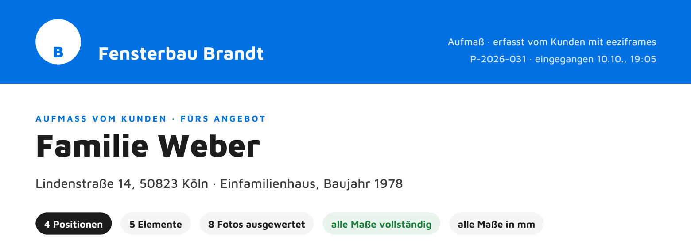
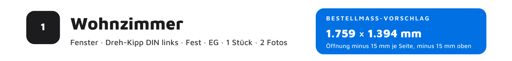

Aufmaßblatt
Als PDF in
Ihrer Farbe.
Je Position eine Zeichnung mit allen Maßen. Vor der Fertigung messen Sie einmal nach.
- Ihr Name im Kopf
- Alle Elemente im Maßstab
- Als Text kopieren


Aufmaßblatt
Je Position eine Zeichnung mit allen Maßen. Vor der Fertigung messen Sie einmal nach.

